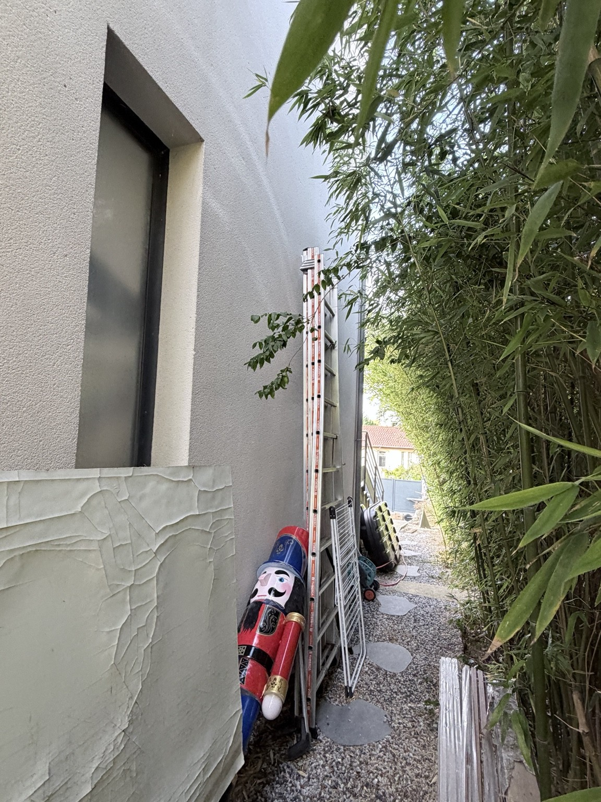
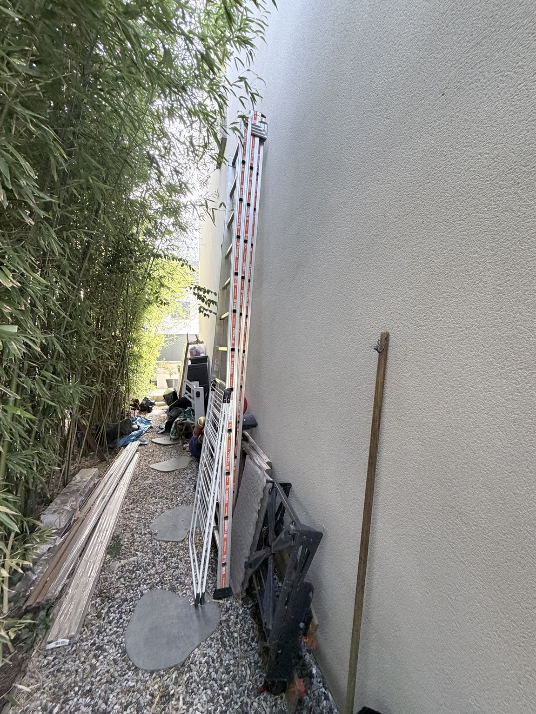
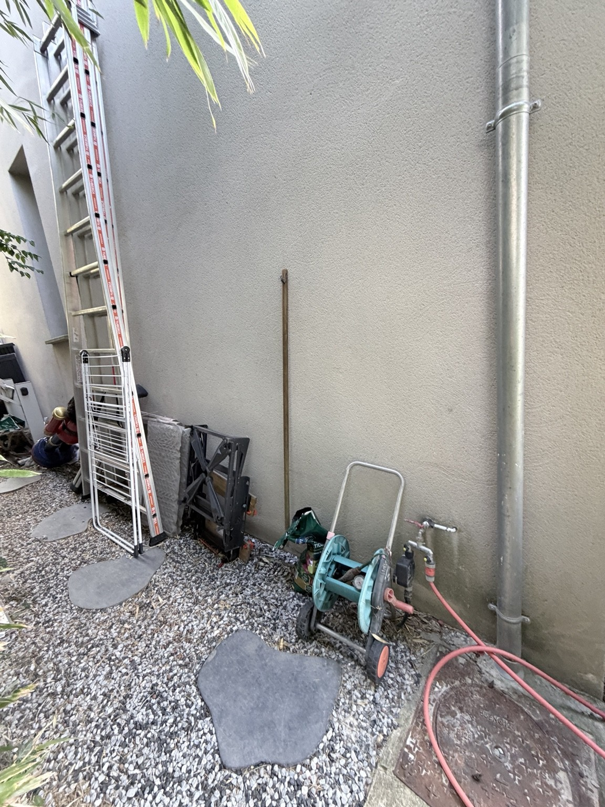

HL Home / Énergie / Mur nord
Quatre groupes.
Une seule colonne.
Les nouvelles références d’Emmanuel remplacent l’ancienne base de calcul. L’objectif reste deux colonnes compactes : les PAC d’un côté, les batteries et l’onduleur de l’autre, derrière un habillage vert ajouré.
Trois Daikin + un Calypso : quatre groupes extérieurs.
La liste reçue comprend 2MXF50A, RXA42B et RXM60A, auxquels s’ajoute la PAC de l’eau chaude. Hugo confirme les quatre dans la même colonne. Le schéma ci-dessous les représente tous, avec départ à 150 mm du sol et appuis indépendants.
Implantation retenue / quatre groupes
Au plus bas.
Un support par appareil.
De bas en haut : RXM60A, RXA42B, 2MXF50A, puis Calypso. Les deux grands groupes sont en bas ; la petite PAC d’eau chaude est en haut. À gauche : batterie au sol sur support adapté, onduleur, puis réserve haute.

Chaque centimètre est explicité.
150 + 734 + 350 + 734 + 350 + 550 + 350 + 535 = 3 753 mm jusqu’au haut du Calypso. Chaque intervalle de 350 mm contient 300 mm libres et un support figuré à 50 mm. Les 300 mm reprennent la réserve sous plafond du guide 2MXF, étendue par prudence aux trois niveaux ; ils ne constituent pas une autorisation de superposer. Le cadre dépasse de 47 mm le dernier appareil, sans toit plein au-dessus.
Les appuis ouverts de 50 mm sont une hypothèse d’encombrement à faire calculer, pas une section structurelle prescrite. Si des tablettes de béton de 150 mm sont retenues à leur place, à mêmes espaces libres et garde au sol, le haut des appareils atteint 4,053 m et le cadre environ 4,10 m. Le béton n’abaisse donc pas automatiquement la colonne.
Pour descendre sous 3,80 m, Emmanuel doit proposer un montage admis qui réduise les réserves entre niveaux ou l’épaisseur des appuis. Le dessin ne les réduit pas sans justification. Avec quatre appareils au lieu de trois, une hauteur supérieure à l’ancien croquis peut être cohérente, même en démarrant plus près du sol.
Correction du calcul
3,60 m n’était pas
une hauteur minimale.
L’ancien dessin additionnait 300 mm en pied, deux groupes de 734 mm, deux intervalles de 450 mm, le Calypso de 535 mm et 397 mm en tête : 300 + 734 + 450 + 734 + 450 + 535 + 397 = 3 600 mm. Les intervalles incluaient des tablettes de béton de 150 mm choisies pour le dessin, sans calcul structurel. Ces marges et les anciennes références ne constituent pas une justification de la hauteur du nouveau projet.
Le premier groupe peut partir près du sol.
La structure porteuse peut démarrer au sol, avec appuis antivibratiles et évacuation des eaux dégagées. Les notices Daikin consultées recommandent, dans leurs dispositions pour temps froid, 150 mm libres sous l’appareil, ou 300 mm en zone de forte neige, et au moins 100 mm au-dessus du niveau de neige attendu. Le dessin peut donc étudier un départ à 150 mm si le site le permet ; poser le fond de l’appareil directement sur une dalle bloquant les évacuations n’est pas équivalent.
Les hauteurs nues, sans marges inventées.
La hauteur construite sera la somme des appareils retenus, de la garde au sol, des supports et dégagements entre niveaux, puis de l’espace supérieur réellement requis. Les deux totaux ci-dessus ne sont pas des hauteurs de pose. Le scénario retenu est celui des quatre groupes. Les dégagements du montage complet restent à valider.

Base de travail mise à jour
Les machines derrière le projet.
Dimensions largeur × hauteur × profondeur, hors supports et espaces d’entretien.
Chaque nom de produit ouvre sa fiche officielle ou la documentation constructeur correspondante. Les liens de gamme peuvent couvrir plusieurs suffixes ; la variante utilisée pour les dimensions reste précisée dans le tableau.
| Équipement | L × H × P (mm) | Masse | Précision |
|---|---|---|---|
| 2MXF50A ↗ | 765 × 550 × 285 | 41 kg | 2MXF50A2V1B |
| RXA42B ↗ | 870 × 734 × 373 | 50 kg | B2V1B : suffixe à confirmer ; B8/B9 plus larges |
| RXM60A ↗ | 954 × 734 × 401 | 49 kg | RXM60A5V1B : suffixe à confirmer |
| Calypso Split 270 L · groupe extérieur ↗ | 735 × 535 × 330 | 24 kg | Ballon intérieur distinct |
| BYD HVM 11.0 · 4 modules ↗ | 585 × 1 228 × 298 | 153–167 kg | 11,04 kWh · candidat |
| BYD HVM 13.8 · 5 modules ↗ | 585 × 1 461 × 298 | 188–205 kg | 13,80 kWh · scénario central |
| BYD HVM 16.6 · 6 modules ↗ | 585 × 1 694 × 298 | 222–243 kg | 16,56 kWh · variante haute |
| Fronius Primo GEN24 6.0 Plus ↗ | 474 × 530 × 165 | 15,38 kg | Monophasé · candidat |
RXA42B : dimensions de la version B2V1B, à confirmer sur la référence complète du devis. Les variantes B8/B9 sont plus larges et profondes (954 × 734 × 401 mm). Le RXM60A est représenté d’après la variante A5V1B. Les hauteurs du calcul restent 734 mm pour ces variantes.
Les batteries BYD et le Fronius sont des candidats de simulation, pas du matériel commandé. La variante HVM 16.6 dépasse légèrement la cible initiale de 16 kWh. La compatibilité de gamme ne valide ni le dimensionnement solaire d’environ 9 kWc, ni les dégagements dans une niche. L’étude historique SolarEdge Designer et le devis Solis Mini 5K restent conservés dans le dossier solaire.
Voir le lot complet d’Emmanuel et les références à confirmer ↗Supports & circulation d’air
Une structure indépendante.
Des espaces justifiés.
Une ossature ou des logements en béton peuvent porter séparément chaque appareil, sans charge sur les capots. Épaisseur des supports, ancrages, fondations et vibrations doivent être dimensionnés ; une dalle de 150 mm n’est pas une obligation déduite des machines.
Le guide du 2MXF-A (§5.2.1, p. 9) indique de ne pas empiler les unités les unes sur les autres. Il réserve aussi 300 mm sous un plafond et 250 mm pour le service des liaisons. Ces valeurs concernent les configurations illustrées dans la notice : elles ne valident pas automatiquement une colonne à plusieurs niches. L’admissibilité des supports indépendants et de l’habillage doit être confirmée pour le montage précis.
- Air et accès : ne pas enfermer les groupes dans un caisson plein. Les panneaux verts restent démontables ; leur ouverture utile et les risques de reprise d’air soufflé sont à vérifier avec l’installateur. Aucun écart entre niveaux n’est réduit arbitrairement pour atteindre une hauteur cible.
- Eau : éviter tout ruissellement d’un groupe sur celui du dessous ou vers les batteries. Traiter évacuation des condensats, gel et pluie.
- Charges : les quatre groupes représentent environ 164 kg, hors supports, selon les variantes documentées. La batterie peut atteindre 243 kg. L’accès à chaque appareil et son remplacement doivent rester possibles.
- Colonne électrique : batteries en partie basse, onduleur au-dessus sur support adapté, puis espace supérieur libre. Les 500 mm proposés précédemment entre batterie et onduleur restent une hypothèse, à confronter aux notices. Un rangement ne doit pas empiéter sur la ventilation ou l’entretien. La notice Fronius impose de traiter la ventilation d’un espace fermé.
- Mur réel : relever la hauteur, la longueur et la largeur du passage. Conserver l’accès à la fenêtre, au robinet, à la descente et au regard. Dégager les bambous au droit du soufflage et de la maintenance.
Vue de dessus
Contre le mur.
Accessible par l’avant.

200 mm à l’arrière + 401 mm pour le groupe le plus profond + 400 mm devant jusqu’à l’habillage = 1 001 mm. Une réserve de maintenance de 1 000 mm commence devant les panneaux, soit 2 001 mm depuis le mur. Largeur proposée : 2 800 mm, répartie en 1 250 mm pour le solaire, 100 mm de séparation et 1 450 mm pour les PAC. Ces cotes restent des réserves de simulation à confirmer sur site et pour le montage complet.
Le ballon et la VMC restent à l’intérieur.
Seul le groupe extérieur du Calypso rejoint l’inventaire du mur nord. Le ballon de 270 L et le caisson Atlantic Hygrogenius Flex restent dans les volumes intérieurs adaptés à leurs notices. La VMC ne crée pas un cinquième groupe extérieur.
Projet de ventilation ↗ · Solaire & stockage ↗


Liste et prix communiqués par Hugo pour le lot géré par Emmanuel Valente. Croquis IMG_6107 et sept photos du mur conservés. Aucun relevé métrique du site disponible.
- Daikin 2MXF-A — dimensions ↗
- Daikin RXA42B — fiche dimensions ↗
- Daikin RXM-A — tableau technique ↗
- Daikin 2MXF-A — guide installateur, §5.2 ↗
- Daikin RXM60A — notice, §4.1.2 ↗
- Atlantic Calypso Split ↗
- BYD HVM — guide ↗
- BYD — compatibilité onduleurs ↗
- Fronius GEN24 — caractéristiques ↗
- Fronius — installation et ventilation ↗